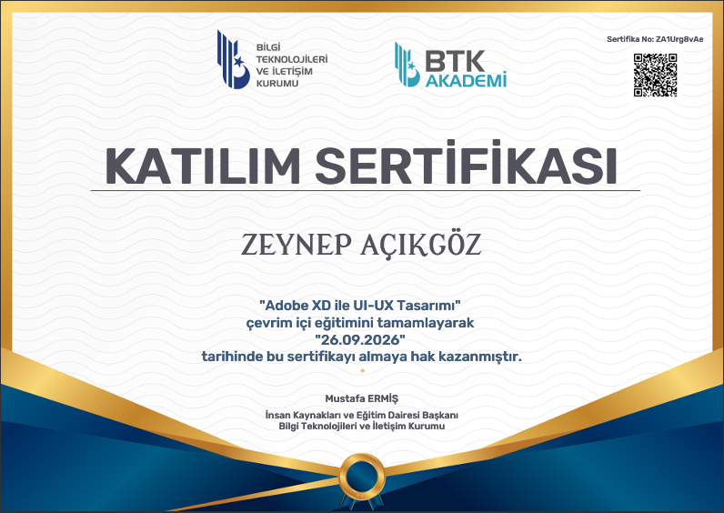
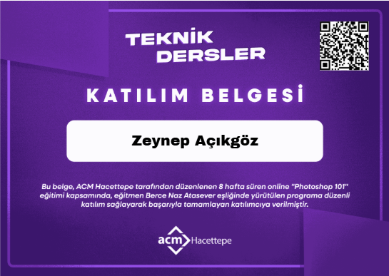

Zeynep Açıkgöz
Eğitim Teknoloğu Adayı | Dijital İçerik Üreticisi |
Öğretim Tasarımcısı Adayı
Eğitim teknolojileri sektöründe edindiği tecrübeyi; etkileşimli e-öğrenme, yapay zeka ve görsel tasarım alanlarındaki yetkinlikleriyle birleştiren bir Dijital İçerik Geliştirici ve Eğitim Tasarımcısı adayı. Sürdürülebilir ve yenilikçi öğrenme deneyimleri tasarlama vizyonunu benimseyerek, analitik problem çözme becerileriyle dijital eğitim projelerine çok yönlü bir değer katmayı hedeflemektedir.
- Articulate Storyline ve çeşitli yapay zekâ araçları kullanılarak etkileşimli e-öğrenme modüllerinin, anlık geri bildirim mekanizmalarının ve eğitim etkinliklerinin tasarlanması.
- İlköğretim ve ortaöğretim seviyelerine yönelik detaylı soru analizlerinin gerçekleştirilmesi; MEB öğretim programına, öğrenci seviyelerine ve öğrenme hedeflerine uygun özgün soruların üretilmesi.
- Öğretim tasarımına uygun promptlar (komutlar) oluşturularak yapay zekâ araçları üzerinden içerik planlama ve görsel geliştirme süreçlerinin yürütülmesi; eğitim içeriklerini destekleyen nitelikli görsel materyallerin hazırlanması.
- Geliştirilen tüm içeriklerin kurumun kalite ve yayın standartlarına uygunluğunun denetlenmesi; materyallerin işlevsel, anlaşılır ve kullanıcı deneyimini maksimize edecek yapıda kurgulanması.
- Öğretim elemanlarının mesleki gelişimine yönelik yürütülen TEYE (Temel Eğitici Yeterlilikleri Eğitimi) projesi kapsamında, ders materyallerinin öğretim tasarımı ilkelerine uygun olarak hazırlanması.
- Yapay zekâ destekli HeyGen aracı kullanılarak eğitim amaçlı, avatar tabanlı video içeriklerinin üretilmesi.
- Ders Tasarım Atölyesi bünyesinde dijital öğretim içeriklerinin geliştirilmesi ve görsel tasarım süreçlerine katkı sağlanması.
- Teknoloji Mentorluk Programı kapsamında Moodle Öğrenme Yönetim Sistemi (LMS) üzerinden öğrenci kayıtları ve kullanıcı işlemlerine yönelik destek sağlanması.
- Farklı birimlere ait katılım belgelerinin grafik tasarımlarının geliştirilmesi.
- Eğitim teknolojileri, dijital öğretim materyalleri geliştirme, e-öğrenme sistemleri ve öğretimsel yazılım tasarımı.
- AGNO: 3,47
- Pedagojik alan bilgisi, öğrenme psikolojisi prensipleri ve öğrenciyi merkeze alan öğretim tasarımları geliştirme süreçleri.
- AGNO: 3,83
- VI. Ulusal Eğitimde Dönüşüm Forumu kapsamında sunulan, öğretim tasarımcısı rollerinin Üretken Yapay Zekâ ile evrimi üzerine akademik bildiri.
- Bildiri Özetleri Kitabı: https://www.eyuder.org/documents/144/UEDFOR_6_%C3%B6zet_v_3.pdf
- Bildiri Sunumu: Uedfor6 Sunum
-
Adobe XD ile UI/UX Tasarımı

* Büyütmek (PDF) için görsele tıklayın.
-
Articulate Storyline 360 ile Etkileşimli İçerik Hazırlama

* Büyütmek (PDF) için görsele tıklayın.
-
Adobe Photoshop

* Büyütmek (PDF) için görsele tıklayın.
-
Yapay Zekâ ile Kodlama

* Büyütmek için görsele tıklayın.
-
Canva Eğitimi

* Büyütmek için görsele tıklayın.
-
TUSAŞ / Gençliğin Teknoloji Üssü

* Büyütmek (PDF) için görsele tıklayın.
-
Eğitimde Teknoloji, İletişim ve Yapay Zekâ

* Büyütmek için görsele tıklayın.
- HeyGen aracı kullanılarak eğitim amaçlı, avatar tabanlı video içeriklerinin üretilmesi.
Proje kapsamındaki örnek video içerik (Notlandırma Modülü)
- Dijital öğretim içeriklerinin geliştirilmesi ve görsel tasarım süreçlerine katkı sağlanması.
- İlgili sayfalara HeyGen aracı ile daha sonradan avatar eklenmiştir.
- Articulate Storyline ve yapay zekâ araçlarıyla etkileşimli, UI/UX odaklı ve anlık geri bildirimli e-öğrenme içeriklerinin tasarımı.
- MEB öğretim programına uygun olarak hazırlanan soru örneklerine yer verilmiştir: